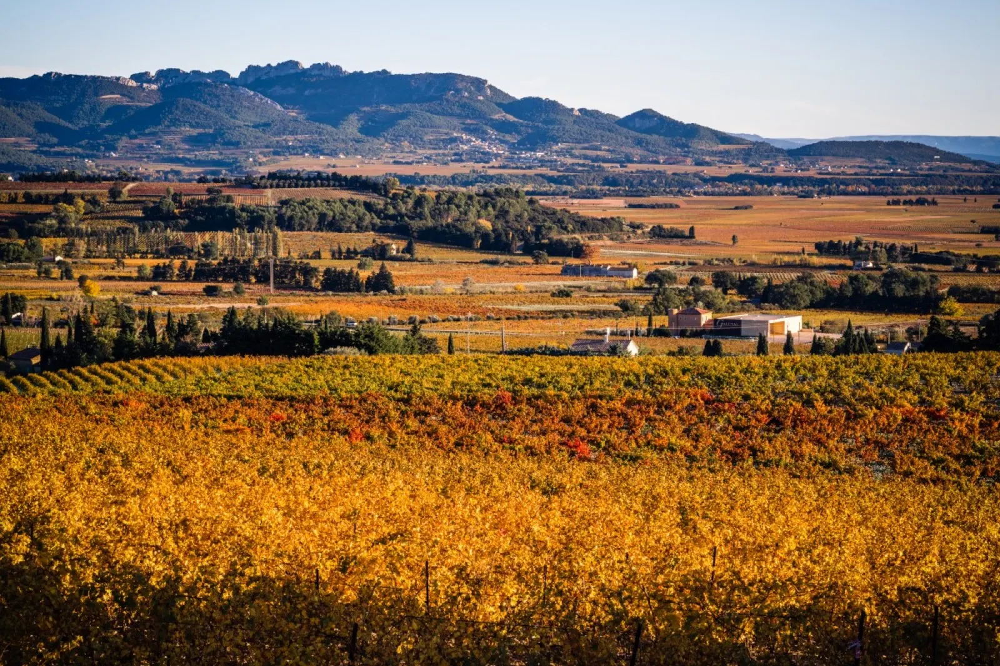
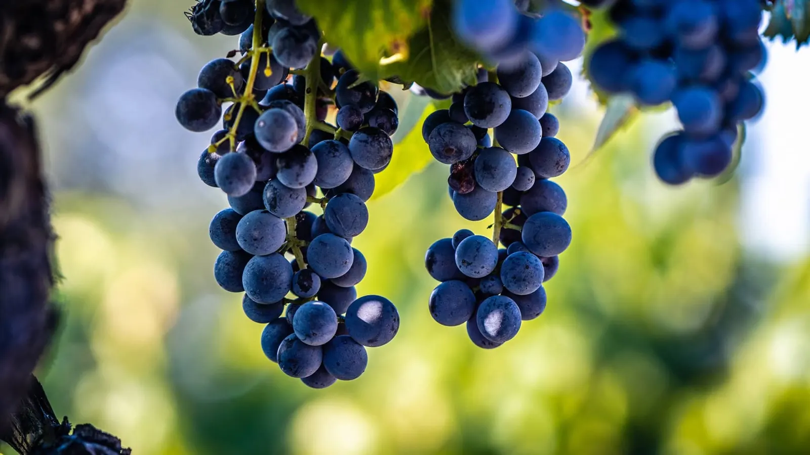
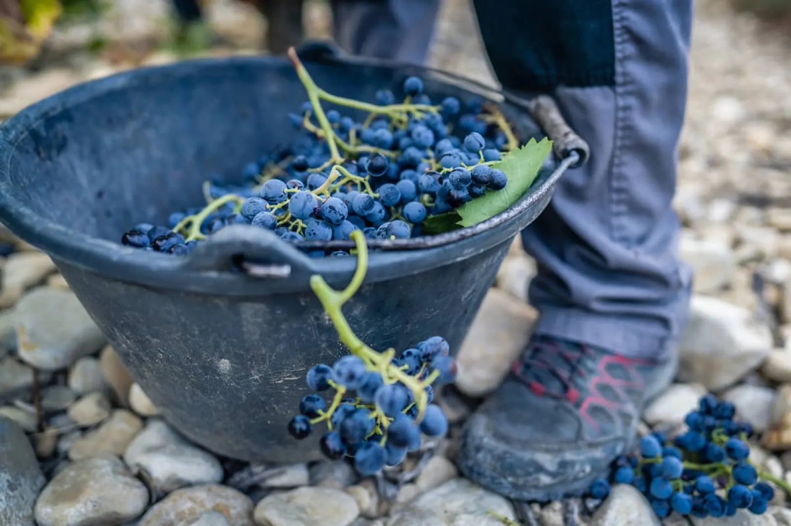
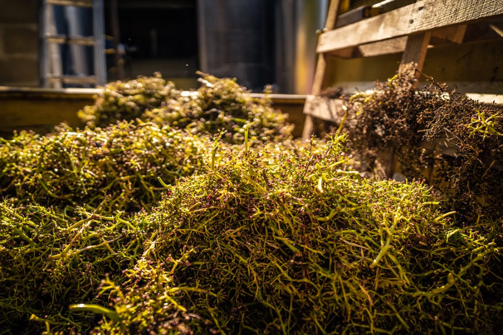
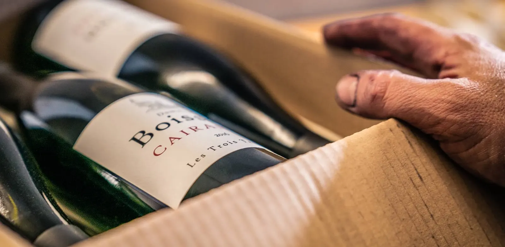
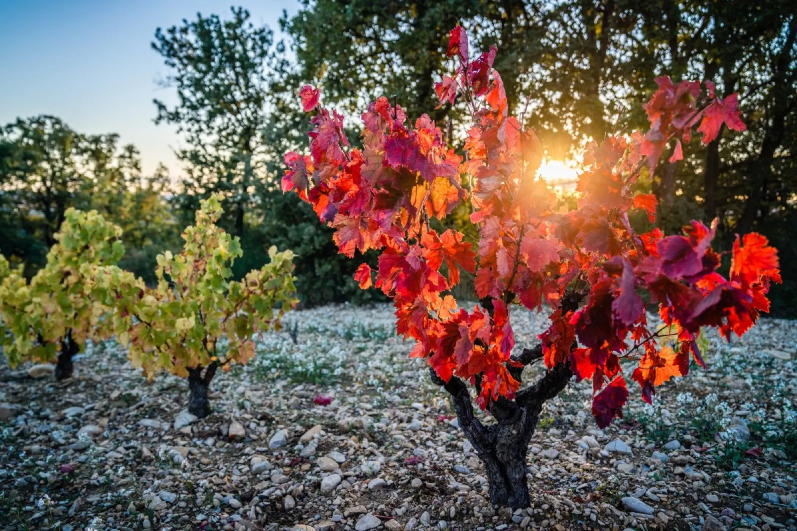
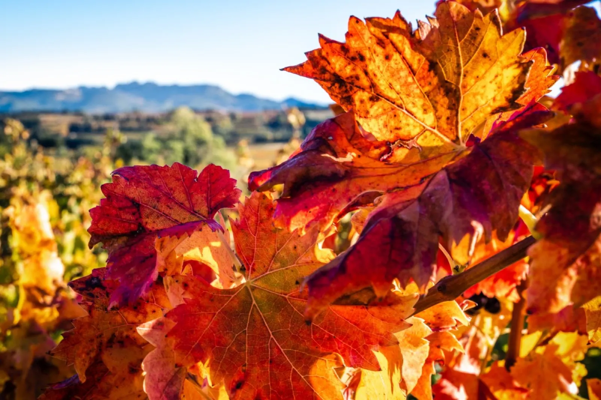
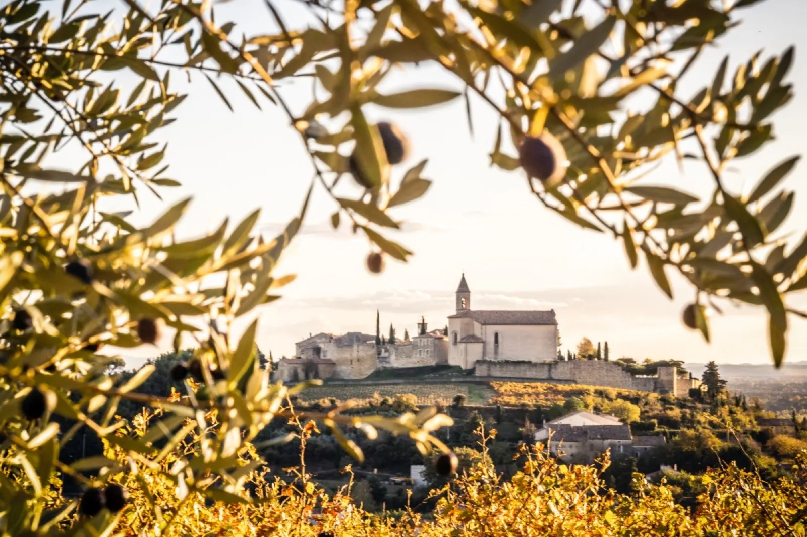
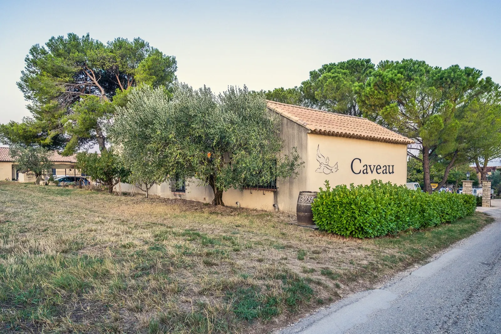

Vins des Côtes du Rhône, à Cairanne
Des vins de terroir, entre Rhône et Ventoux
À Cairanne, au cœur des Côtes du Rhône Villages, Régis et Bruno Boisson produisent de grands vins de terroir qui allient finesse et puissance.

- CairanneAu cœur des Côtes du Rhône Villages
- BioVignes en agriculture biologique, certifiées en 2020
- 1986La première bouteille au nom du domaine
- 9 vinsCôtes du Rhône, Cairanne et Massif d'Uchaux
« Ce qui est bon à manger est bon à vinifier »
- Fidélité au terroir
- Respect de l'environnement
- Maturité du raisin
Au domaine, le raisin est le point crucial du vin. Les vignes sont cultivées en agriculture biologique, les sols labourés, et le travail manuel les accompagne toute l'année.
En cave, la vinification accompagne ce raisin : l'élevage se fait en cuve béton ou en foudres et demi-muids, pour respecter le fruit au maximum.



Nos vins
Neuf vins, du Côtes du Rhône au Clos de la Brussière. Chacun a sa fiche, et tous se dégustent au caveau, du lundi au samedi.

Cairanne
Côtes du Rhône
Clos de la Brussière
Massif d'Uchaux
Une parcelle de 2 ha, au sol couvert de lauses rocheuses et de silex sur une matrice argilo-sableuse. Un mur de pierre l'entoure et lui a donné son nom. Des vins marqués par une belle minéralité, de la richesse et de la race.
Voir le vin

Trois sols à Cairanne
Plusieurs types de sols et d'expositions donnent au domaine un large choix d'assemblages, et une grande complexité à ses vins.
- Les sablièresDes vins fins, élégants et ronds.
- Les garriguesDes vins puissants, structurés et corsés.
- Les coteauxDes vins suaves, riches et racés.
Des oliviers aux vignes
- Milieu du XIXe siècleNos aïeux achètent quelques parcelles et une petite ferme.
- Après-guerreRené Boisson, grand-père de Bruno, développe l'exploitation.
- 1956Après le gel, il remplace les oliviers gelés par des vignes.
- 1957Il quitte la cave coopérative pour créer sa propre cave.
- 1986La première bouteille portant l'étiquette du Domaine Boisson.
- 2020Les vignes sont certifiées en agriculture biologique.


Le caveau
- Dégustation toute l'année
- Du lundi au samedi, 10 h à 12 h 30 et 14 h à 18 h 30. Fermé le dimanche, ouverture possible sur rendez-vous.
- Visite du domaine et des caves
- Sur rendez-vous
- Adresse
- 365, chemin du Moulin, 84290 Cairanne
- Contact
- 04 90 30 70 01
contact@domaineboisson.fr
28 et 29novembre 2026
Salon des vins de Passy
Parvis des Fiz, salle Robert Fournier, Passy-Chedde.